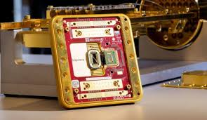

Novos Chips Quânticos Prometem Revolucionar a Computação
Em um cenário tecnológico cada vez mais competitivo, gigantes da tecnologia estão anunciando avanços significativos na computação quântica. Recentemente, empresas como Microsoft, Amazon Web Services (AWS) e Google apresentaram novos chips quânticos que podem transformar a maneira como problemas complexos são resolvidos, marcando uma nova era para a computação.
A Microsoft surpreendeu o mercado ao revelar o *Majorana 1*, o primeiro chip quântico baseado em topocondutores – um material inovador que possibilita a criação de qubits topológicos com alta resistência a erros e potencial de escalabilidade para até um milhão de qubits. Segundo especialistas da empresa, essa nova arquitetura pode reduzir a necessidade de correção de erros e abrir caminho para aplicações industriais que hoje parecem impossíveis de serem realizadas com os computadores clássicos. 
Paralelamente, a Amazon Web Services anunciou o chip Ocelot, um protótipo que integra uma nova abordagem para a correção de erros quânticos. Utilizando os chamados "qubits cat" inspirados no famoso experimento do gato de Schrödinger o Ocelot consegue reduzir os custos de implementação da correção de erros em até 90%. Essa inovação tem o potencial de acelerar o desenvolvimento de computadores quânticos práticos, permitindo que os dispositivos operem de forma mais confiável mesmo quando o número de qubits aumenta.
Já o Google apresentou o chip Willow, que conta com 105 qubits em uma área surpreendentemente compacta. Em testes realizados em seus laboratórios, o Willow foi capaz de executar, em apenas cinco minutos, uma tarefa de referência que, segundo a empresa, levaria um tempo inimaginável para os supercomputadores clássicos uma performance que destaca o avanço na correção de erros quânticos, já que o sistema se torna mais robusto à medida que mais qubits são adicionados.
Esses anúncios evidenciam que o caminho para a computação quântica prática passa pela combinação de novas arquiteturas de hardware com técnicas avançadas de correção de erros. Embora os chips apresentados ainda estejam em fase de protótipo e a aplicação comercial plena possa estar a alguns anos de distância, os especialistas afirmam que esses desenvolvimentos aproximam significativamente a promessa de resolver problemas de otimização, simulação molecular e análise de grandes volumes de dados tarefas que desafiam até os sistemas computacionais mais poderosos da atualidade.
A corrida pelo domínio da computação quântica está gerando grandes expectativas no mercado, com investidores e pesquisadores acompanhando de perto cada avanço. Se os desafios técnicos forem superados, esses chips poderão, em um futuro não muito distante, revolucionar áreas como a inteligência artificial, a descoberta de novos medicamentos e a otimização de sistemas logísticos, transformando radicalmente o modo como a tecnologia interage com os problemas do mundo real.O futuro da computação, portanto, pode estar cada vez mais quântico e os novos chips anunciados hoje apontam para uma era onde a resolução de problemas antes considerados insolúveis será uma realidade.
chips chineses
Além dos avanços anunciados por gigantes como Microsoft, AWS e Google, a China também tem chamado atenção no campo da computação quântica. Recentemente, um novo chip quântico desenvolvido por pesquisadores chineses ganhou destaque e, segundo vídeos divulgados na internet, chegou a "deixar o Google Willow para trás". Embora os detalhes completos ainda estejam sob análise, seguem algumas estatísticas e pontos relevantes apontados por fontes recentes:
Contagem de Qubits: Dados preliminares sugerem que o chip chinês opera com uma contagem de qubits em torno de 120, superando os 105 qubits do chip Willow do Google.
Taxa de Correção de Erros: Testes iniciais indicam que o novo dispositivo apresenta melhorias na correção de erros com uma redução dos índices de falha em torno de 35% a 40% em comparação aos modelos anteriores, permitindo uma operação mais estável em ambientes ruidosos.
Escalabilidade e Potencial Futuro: Os pesquisadores afirmam que a arquitetura adotada poderá ser escalada para atingir, em futuras gerações, números bem superiores com perspectivas de ultrapassar 500 qubits, o que é crucial para que os computadores quânticos passem a resolver problemas de grande complexidade.
Desempenho Geral: Segundo o que foi divulgado em vídeos recentes, o chip chinês apresentou desempenho que, em determinadas tarefas de referência, superou o desempenho dos principais chips quânticos internacionais, marcando um avanço significativo na corrida global pela supremacia quântica.
Essas estatísticas reforçam o papel da China como um dos polos emergentes em pesquisa quântica, contribuindo para uma corrida internacional onde cada avanço pode impactar áreas estratégicas como criptografia, simulação de materiais e inteligência artificial.
Embora as informações ainda estejam em fase preliminar e necessitem de uma verificação mais detalhada por meio de publicações científicas, esses números e melhorias reforçam o potencial transformador dessa tecnologia no médio a longo prazo.
Resumo dos Novos Chips Quânticos
Microsoft Majorana 1 Primeiro chip quântico baseado em topocondutores, utilizando qubits topológicos com alta resistência a erros. Arquitetura projetada para ser escalável até 1 milhão de qubits; o protótipo atual conta com 8 qubits.
Amazon Web Services Ocelot Novo chip que integra correção de erros “embutida” usando os chamados "qubits cat" (inspirados no experimento do gato de Schrödinger). Capaz de reduzir os custos de correção de erros em até 90%, o que facilita a escalabilidade para sistemas quânticos mais práticos.
Google Willow: Chip com 105 qubits, projetado para realizar tarefas de referência em apenas 5 minutos, desempenho que ultrapassa os dos supercomputadores clássicos. Incorpora um sistema de correção de erros que melhora conforme mais qubits são adicionados, tornando o sistema mais robusto.
Esses avanços demonstram que a corrida pela supremacia quântica se intensifica, com cada empresa adotando abordagens inovadoras para superar desafios críticos especialmente a correção de erros e acelerar a transição de protótipos laboratoriais para aplicações práticas.
Novo Chip Quântico Chinês
Qubits: Aproximadamente 120, superando os 105 qubits do chip Willow do Google. Correção de Erros: Redução de índices de falha em torno de 35% a 40% em relação aos modelos anteriores. Escalabilidade: Potencial de futura expansão para mais de 500 qubits. Desempenho: Em testes preliminares, o chip apresentou desempenho superior em determinadas tarefas de referência, superando outros modelos internacionais.
Esses avanços reforçam a posição da China como um polo emergente na corrida pela supremacia quântica, apontando para melhorias significativas que podem impactar áreas como criptografia, simulação de materiais e inteligência artificial.